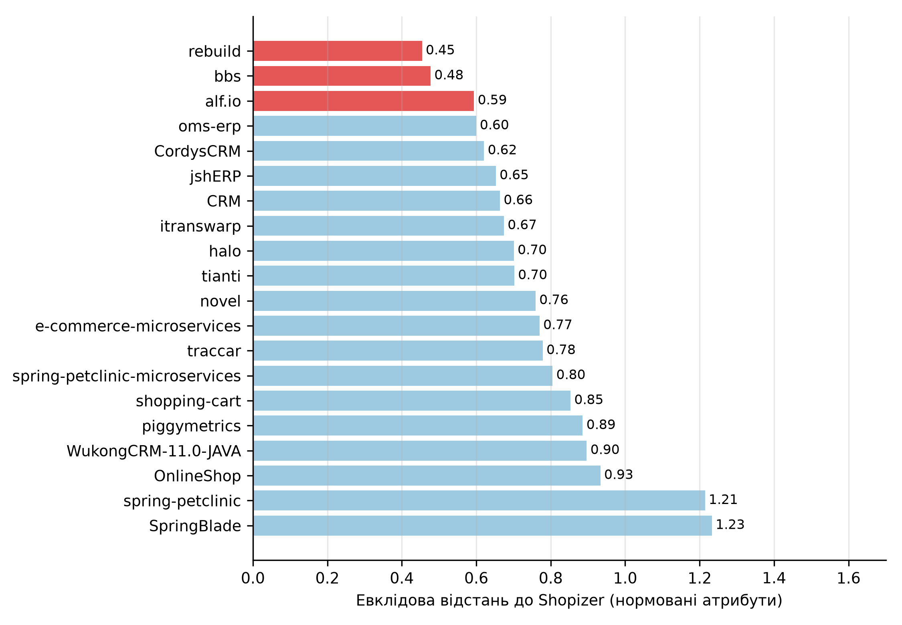
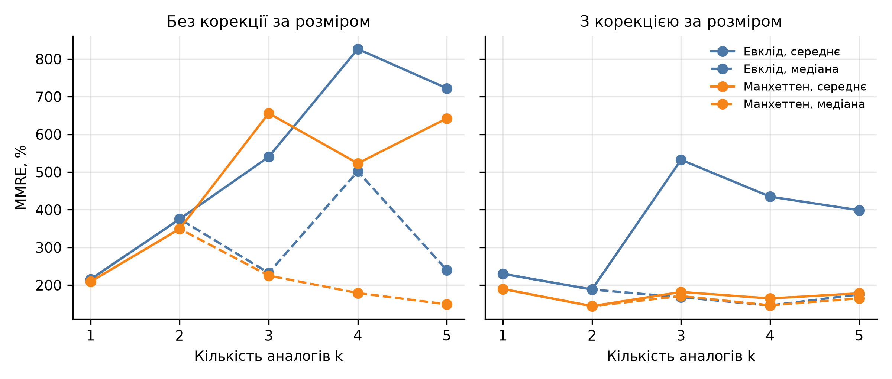

КПІ ім. Ігоря Сікорського · Практична робота № 5
Оцінка зусиль Shopizer за 20 відкритими Java-проєктами
Виконав: Соколов Олександр, студент групи ІП-33
Дисципліна «Економіка IT-індустрії та підприємництво»
| Проєкт | KLOC | Зусилля |
|---|---|---|
| rebuild | 70.9 | 206 |
| bbs | 75.5 | 43 |
| alf.io | 83.1 | 386 |
| oms-erp | 47.2 | 20 |
| CordysCRM | 137.3 | 276 |
| halo | 106.9 | 571 |
| traccar | 101.2 | 712 |
| Атрибут | Як визначено | Shopizer |
|---|---|---|
| Збірні модулі | файли pom.xml і build.gradle | 6 |
| Залежності | оголошені у файлах збірки | 123 |
| Частка тестів, % | тестовий код серед рядків Java | 4.6 |
| Частка коментарів, % | коментарі до рядків коду | 15.7 |
| Spring-компоненти | класи з анотаціями Service, Controller та ін. | 269 |
| Ендпоінти | анотації Get-, Post-, RequestMapping та ін. | 370 |
Без розміру, зусиль і мови; усі атрибути визначені за вихідним кодом
x′ = (x − min) / (max − min)
dE = √Σ(x′ − y′)²
dM = Σ|x′ − y′|
k = 6 атрибутів, нормування за 21 проєктом

Евклідова відстань до Shopizer
| Конфігурація | Зусилля | Вартість, $ |
|---|---|---|
| Евклід, k = 3, середнє | 211.7 | 529 167 |
| Евклід, k = 3, з корекцією за розміром | 204.6 | 511 494 |
| Манхеттен, k = 3, середнє | 89.7 | 224 167 |
| Манхеттен, k = 3, з корекцією | 98.2 | 245 508 |
| Калібрована: Манхеттен, k = 2, з корекцією | 125.8 | 314 484 |
Зусилля в людино-місяцях; E = (E1 + E2 + E3) / 3 = (206 + 43 + 386) / 3 = 211.7. Зарплата $2 500 (медіана Middle, усі мови) [4], курс 45.666 грн [5]

Перехресна перевірка, MMRE
| Метод | Зусилля, людино-місяців |
|---|---|
| Аналогія, калібрована | 125.8 |
| Функціональні точки (ПР3) | 146.6 |
| Feature points (ПР4) | 158.4 |
| COCOMO за LOC (ПР2) | 360.9 |
| Аналогія, діапазон конфігурацій | 89.7 – 211.7 |
Калібрована оцінка на 14–21% нижча за точки і майже втричі нижча за COCOMO. Без проєктів зі слабкою історією комітів оцінка 241–388, тобто на рівні COCOMO
Повний список і посилання на 20 проєктів – у звіті